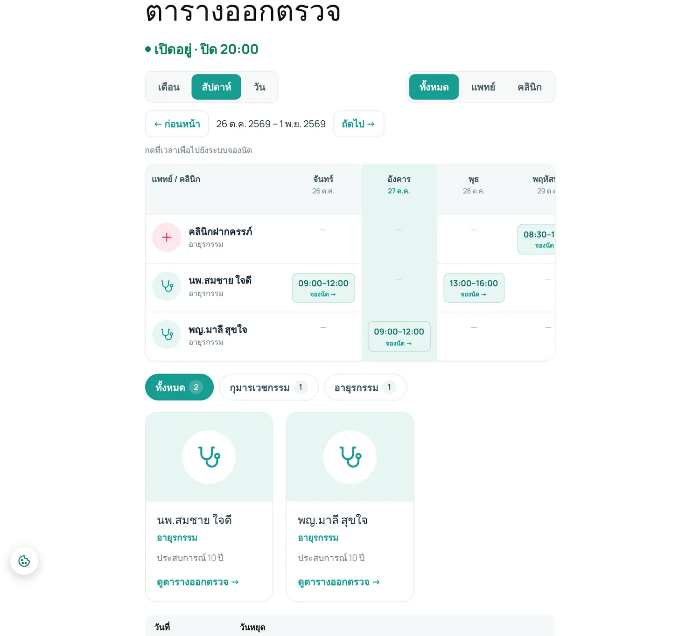
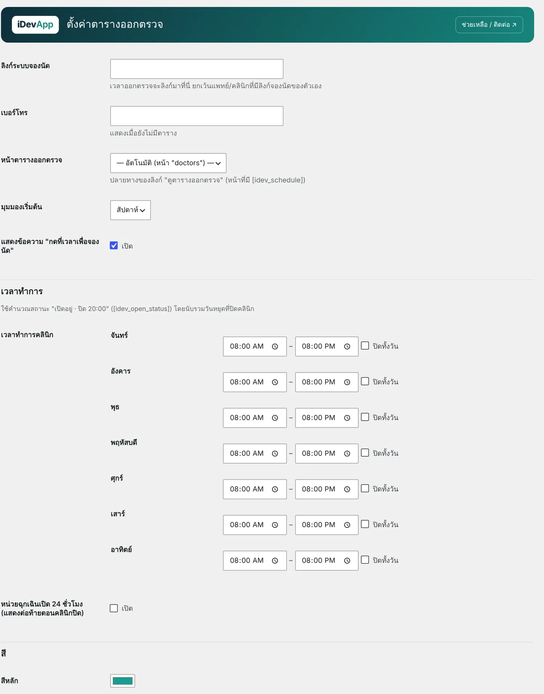

1ความสามารถ

- เวลาออกตรวจ ทุกสัปดาห์ · ทุกเดือน (เช่น พุธที่ 1 และ 3 หรือทุกวันที่ 15) · ทุกปี · เฉพาะวันที่ กำหนดช่วงวันที่มีผลได้
- ปุ่มลัด ＋ จันทร์–ศุกร์ / ＋ เสาร์–อาทิตย์ · template เวลาที่ใช้บ่อย · คัดลอกเวลาจากแพทย์คนอื่น
- มุมมอง เดือน / สัปดาห์ / วัน กรองแพทย์ / คลินิก / สาขา และกดเวลาเพื่อไปจองนัด
- ทีมแพทย์ มีรูป สาขา ประวัติ แยกแท็บตามสาขา
- เวลาทำการ และสถานะเปิด/ปิดแบบเรียลไทม์ รวมวันหยุดที่ปิดคลินิก
- วันหยุดจาก iDev Thai Holidays แสดงแทนเวลาออกตรวจให้อัตโนมัติ
2เริ่มต้นใช้งาน
- เพิ่มแพทย์หรือคลินิก
แพทย์และคลินิก › เพิ่มแพทย์/คลินิก ใส่ชื่อ (เช่น นพ.สมชาย ใจดี) เลือกประเภท แพทย์ หรือ คลินิก / แผนก ชื่ออังกฤษ สาขา หมายเหตุ ประวัติ และรูปภาพประจำ

กล่อง "ข้อมูลและเวลาออกตรวจ" - เพิ่มเวลาออกตรวจ
กด ＋ เพิ่มเวลา เลือกรูปแบบ วัน เวลาเริ่ม–ถึง หรือใช้ปุ่มลัด จันทร์–ศุกร์ ถ้าแพทย์หลายคนใช้เวลาเดียวกัน กด บันทึกเป็น template แล้วใช้กับคนอื่นได้
- จัดสาขาเป็นแท็บ
กล่อง สาขา ทางขวาของหน้าแก้ไข แพทย์หนึ่งคนอยู่ได้หลายสาขา ลำดับแท็บกำหนดที่หน้าแก้ไขสาขา (เลขน้อยแสดงก่อน)
- ตั้งเวลาทำการและลิงก์จองนัด
แพทย์และคลินิก › ตั้งค่า ใส่เวลาทำการแต่ละวัน เบอร์โทร มุมมองเริ่มต้น สี และลิงก์ระบบจองนัด (ถ้าใช้ iDev Appointments จะลิงก์ให้เอง)

หน้าตั้งค่าตารางออกตรวจ - วางตารางในหน้าเว็บ
สร้างหน้า (slug แนะนำ
doctors) ใส่บล็อก ตารางออกตรวจ และ ทีมแพทย์ หรือ shortcode ด้านล่าง
ซ่อนแพทย์จากตารางชั่วคราว: เปลี่ยนเป็น ฉบับร่าง · เรียงลำดับ: Attributes → Order
3บล็อกและ Shortcode
| Shortcode | ใช้ทำอะไร |
|---|---|
[idev_schedule] | ตารางพร้อมปุ่ม เดือน / สัปดาห์ / วัน ตัวกรอง และเลื่อนวันที่ |
[idev_schedule view="day" navigation="0"] | เฉพาะวันนี้ ไม่มีปุ่ม (เหมาะกับหน้าแรก) |
[idev_schedule kind="clinic" specialty="pediatrics"] | กรองประเภทหรือสาขา (slug ของสาขา) |
[idev_doctors] | ทีมแพทย์แยกแท็บตามสาขา |
[idev_doctors kind="all" columns="4" tabs="0" bio="0"] | ตัวเลือก: kind doctor|clinic|all · columns · tabs · bio · schedule_link · specialty |
[idev_open_status] | สถานะ "เปิดอยู่ · ปิด 20:00" |
ทั้งสามแบบเป็นบล็อกได้ในหมวด iDevApp ของตัวแก้ไขหน้า: ตารางออกตรวจ · ทีมแพทย์ · สถานะเปิด/ปิด
4ปัญหาที่พบบ่อย
เวลาไม่แสดงในตาราง
- แถวเวลายังไม่ครบ (เวลาสิ้นสุดต้องหลังเวลาเริ่ม และต้องเลือกวัน/วันที่) แถวที่ไม่ครบจะไม่ถูกบันทึก
- ช่วงวันที่มีผล ยังไม่เริ่มหรือหมดแล้ว
- แพทย์เป็นฉบับร่าง
สถานะเปิด/ปิดไม่ตรง
ตรวจ เขตเวลา ใน Settings › General ให้เป็น Bangkok และเวลาทำการในหน้าตั้งค่า